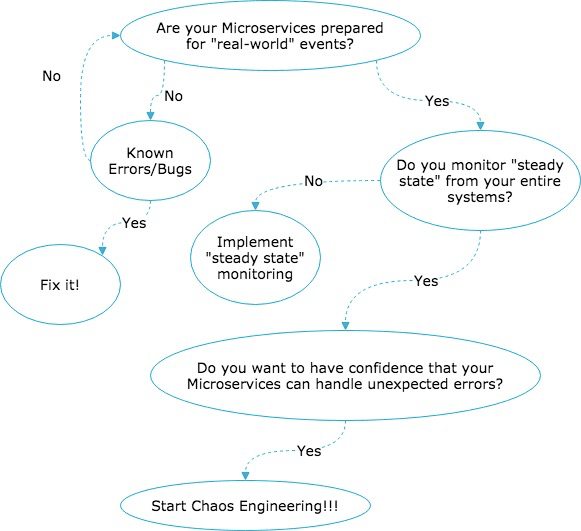
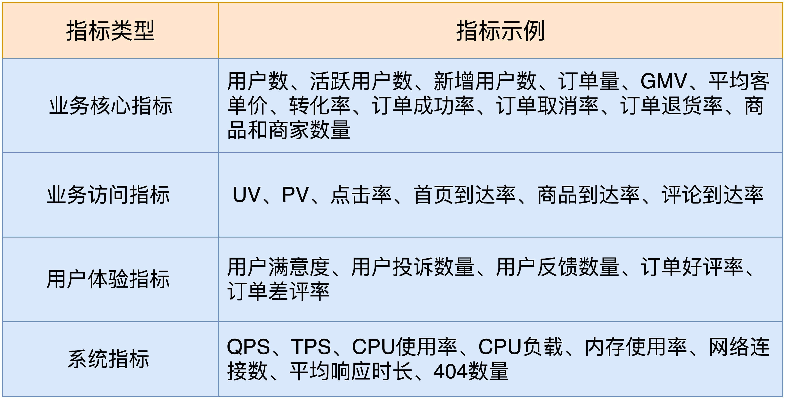

- 00 开篇词 从默默无闻到风靡全球，DevOps究竟有什么魔力？.md.html
- 01 DevOps的“定义”：DevOps究竟要解决什么问题？.md.html
- 02 DevOps的价值：数字化转型时代，DevOps是必选项？.md.html
- 03 DevOps的实施：到底是工具先行还是文化先行？.md.html
- 04 DevOps的衡量：你是否找到了DevOps的实施路线图？.md.html
- 05 价值流分析：关于DevOps转型，我们应该从何处入手？.md.html
- 06 转型之路：企业实施DevOps的常见路径和问题.md.html
- 07 业务敏捷：帮助DevOps快速落地的源动力.md.html
- 08 精益看板（上）：精益驱动的敏捷开发方法.md.html
- 09 精益看板（下）：精益驱动的敏捷开发方法.md.html
- 10 配置管理：最容易被忽视的DevOps工程实践基础.md.html
- 11 分支策略：让研发高效协作的关键要素.md.html
- 12 持续集成：你说的CI和我说的CI是一回事吗？.md.html
- 13 自动化测试：DevOps的阿克琉斯之踵.md.html
- 14 内建质量：丰田和亚马逊给我们的启示.md.html
- 15 技术债务：那些不可忽视的潜在问题.md.html
- 16 环境管理：一切皆代码是一种什么样的体验？.md.html
- 17 部署管理：低风险的部署发布策略.md.html
- 18 混沌工程：软件领域的反脆弱.md.html
- 19 正向度量：如何建立完整的DevOps度量体系？.md.html
- 20 持续改进：PDCA体系和持续改进的意义.md.html
- 21 开源还是自研：企业DevOps平台建设的三个阶段.md.html
- 22 产品设计之道：DevOps产品设计的五个层次.md.html
- 23 持续交付平台：现代流水线必备的十大特征（上）.md.html
- 24 持续交付平台：现代流水线必备的十大特征（下）.md.html
- 25 让数据说话：如何建设企业级数据度量平台？.md.html
- 26 平台产品研发：三个月完成千人规模的产品要怎么做？.md.html
- 27 巨人的肩膀：那些你不能忽视的开源工具.md.html
- 28 迈向云端：云原生应用时代的平台思考.md.html
- 29 向前一步：万人规模企业的DevOps实战转型案例（上）.md.html
- 30 向前一步：万人规模企业的DevOps实战转型案例（下）.md.html
- 期中总结 3个典型问题答疑及如何高效学习 (1).md.html
- 期中总结 3个典型问题答疑及如何高效学习.md.html
- 期末总结 在云时代，如何选择一款合适的流水线工具？.md.html
- 特别放送（一）成为DevOps工程师的必备技能（上）.md.html
- 特别放送（三）学习DevOps不得不了解的经典资料.md.html
- 特别放送（二）成为DevOps工程师的必备技能（下）.md.html
- 特别放送（五）关于DevOps组织和文化的那些趣事儿.md.html
- 特别放送（四）Jenkins产品经理是如何设计产品的？.md.html
- 结束语 持续改进，成就非凡！.md.html
- 捐赠
18 混沌工程：软件领域的反脆弱
你好，我是石雪峰。
经济学领域有一本特别有名的书，叫作《反脆弱》。它的核心理念就是，在面对普遍存在又不可预估的不确定性时，通过一种行之有效的方法，不仅可以规避重大风险，还能够利用风险获取超出预期的回报。另外，通过积极地试错，控制损失成本，还能不断提升在不确定性事件发生时的收益。
不仅仅要规避风险，还要在风险中受益，这听起来是不是很神奇？其实，在软件工程领域，也有类似的思想和实践，可以帮助我们在面对极其复杂且规模庞大的分布式系统时，有效地应对不可预见的故障，不仅可以从容不迫地应对，还能从中获益，并且通过频繁、大量地实验，识别并解决潜在的风险点，从而提升对于复杂系统的信心。这就是今天我要给你分享的主题：混沌工程。
什么是混沌工程？
混沌工程作为软件领域的一门新兴学科，就和它的名字一样，让很多人感到非常“混沌”。那么，混沌工程究竟是从何而来，又是要解决什么问题呢？
我们先来看看混沌原则网站对混沌工程的定义：
Chaos Engineering is the discipline of experimenting on a distributed system in order to build confidence in the system’s capability to withstand turbulent conditions in production.
混沌工程是一门在分布式系统上进行实验的学科，目的是建立人们对于复杂系统在生产环境中抵御突发事件的信心。
简单来说，混沌工程要解决的，就是复杂环境下的分布式系统的反脆弱问题。那么，我们所要面对的“复杂的分布式”的真实世界是怎样的呢？
我给你举个例子。对于一个大型的平台来说，每日在线的活动数以万计，服务的用户可以达到千万级别。为了满足这种规模的业务量级，仅客户端就有300多个组件，后端服务更是不计其数。
可以想象，这样一套复杂的系统，任何一个地方出了一点小问题，都有可能带来线上事故。
另外，随着微服务、容器化等技术的兴起，业务驱动自组织团队独立发布的频率越来越高，再加上架构的不断更新演进，可以说，几乎没有人能完整地梳理清楚一套系统的服务间调用关系，这就让复杂系统变成了一个“黑洞”。不管外围如何敲敲打打，都很难窥探到核心问题。
为了让你对复杂的真实系统有更加直观的认识，我跟你分享一张Netflix公司在2014年公开的微服务调用关系图，你可以参考一下。
图片来源：https://www.slideshare.net/BruceWong3/the-case-for-chaos?from_action=save
面对这样复杂的分布式系统，想要通过穷尽全面的测试来保障质量，不出线上问题几乎是不可能的事情。因为测试的假设前提都是为了验证软件的预期行为，而真实世界的问题却从来不按套路出牌，被动遵循已有的经验并不能预防和解决未知的问题。
尤其是，如果系统的可用性是基于某一个服务不会出问题来设计的话，那么，这个服务十有八九会出问题。
比如，前不久，我们内部的平台就出现了一次宕机，原因是依赖的一个基础服务的认证模块出现了异常，从而导致存储数据失败。因为平台的所有基础数据都在这个看似万无一失的服务上保存，即便监控第一时间发现了这个问题，但是除了等待之外，我们什么都做不了。结果，平台的可用性直接从4个9掉到了3个9。
既然面对复杂的分布式系统，我们无法避免异常事件的发生，那么有什么更好的办法，来应对这种不确定性吗？Netflix公司给出了他们的回答，而这正是混沌工程诞生的初衷。
区别于以往的方式，混沌工程采取了一种更加积极的方式，换了一个思路主动出击。那就是，尽可能在这些故障和缺陷发生之前，通过一系列的实验，在真实环境中验证系统在故障发生时的表现。根据实验的结果来识别风险问题，并且有针对性地进行系统改造和安全加固，从而提升对于整个系统可用性的信心。
服务可用性实践
看到这儿，你可能就要问了，这不就是日常的系统可用性保障活动吗？我们公司也有类似的实践呀，比如故障演练、服务降级方案、全链路压测等，这些基本都是大促活动到来前必需的备战活动。
的确，这些实践与混沌工程有相似之处，毕竟，混沌工程就是从这些实践中发展起来的，但是，思路又略有不同。
比较正规的公司基本上都会有一套完整的数据备份机制和服务应急响应预案，就是为了当灾难发生时，可以保证系统的可用性和核心数据的安全。
比如，故障演练就是针对以往发生过的问题进行有针对性地模拟演练。通过事先定义好的演练范围，然后人为模拟事故发生，触发应急响应预案，快速地进行故障定位和服务切换，并观察整个过程的耗时和各项数据指标的表现。
故障演练针对的大多是可以预见到的问题，比如机器层面的物理机异常关机、断电，设备层面的磁盘空间写满、I/O变慢，网络层面的网络延迟、DNS解析异常等。这些问题说起来事无巨细，但基本上都有一条清晰的路径，有明确的触发因素，监控事项和解决方法。
另外，在故障演练的过程中，很难覆盖所有的故障类型，只能选择典型的故障进行验证。但是实际问题发生时，往往是多个变量一起出问题，逐个排查下来非常耗时耗力。
很多公司为了模拟线上的真实场景，于是就引入了全链路压测的技术。对于大促密集的电商行业来说，尤为重要。
对于一次完整的压测来说，大致的过程是这样的：
- 首先，准备压测计划，调试压测脚本和环境，对压测容量和范围进行预估；
- 然后，为了保证线上流量不受影响完成机房线路切换，确保在压测过程中没有线上真实流量的引入；
- 接着，根据预定义的压测场景执行压测计划，观察流量峰值并动态调整；
- 最后，在压测完成后，再次进行流量切换并汇总压测结果，识别压测问题。在压测过程中，除了关注QPS指标之外，还要关注TP99、CPU使用率、CPU负载、内存、TCP连接数等，从而客观地体现出大流量下服务的可用性。
从业务层面来说，面对多变的环境因素，完善的服务降级预案和系统兜底机制也是必不可少的。在业务压力比较大的时候，可以适当地屏蔽一些对用户感知不大的服务，比如推荐、辅助工具、日志打印、状态提示等，保证最核心流程的可用性。另外，适当地引入排队机制也能在一定程度上分散瞬时压力。
好啦，说了这么多服务可用性的方法，是不是把这些都做到位就可以确保万无一失了呢？答案是否定的。这是因为，这些活动都是在打有准备之仗。但实际上，很多问题都是无法预知的。
既然现有的实践并不能帮助我们拓展对不可用性的认知，那么就需要一种有效的实验方法，帮助我们基于各种要素排列组合，从而在问题发生之前，发现这些潜在的风险。
比如，Netflix公司著名的“混乱猴子（Chaos Monkey）”，就是用来随机关闭生产环境的实例的工具。在生产环境放任一个“猴子”乱搞事情，这是疯了吗？还真不是。Netflix的“猴子军团”的威力一个比一个巨大，甚至可以直接干掉一个云服务可用区。
这背后的原因就是，即便是云服务上，也不能确保它们的服务是永远可靠的，所以，不要把可用性的假设建立在依赖服务不会出问题上。
当然，Netflix并没有权限真正关闭云服务上的可用区，他们只是模拟了这个过程，并由此来促使工程团队建立多区域的可用性系统，促进研发团队直面失败的架构设计，不断磨练工程师对弹性系统的认知。
引用Netflix的混沌工程师Nora Jones的话来说
混沌工程不是为了制造问题，而是为了揭示问题。
必须要强调的是，在引入混沌工程的实践之前，首先需要确保现有的服务已经具备了弹性模式，并且能够在应急响应预案和自动化工具的支撑下尽早解决可能出现的问题。
如果现有的服务连基本的可恢复性这个条件都不具备的话，那么这种混沌实验是没有意义的。我跟你分享一幅混沌工程的决策图，你可以参考一下：

图片来源：https://blog.codecentric.de/en/2018/07/chaos-engineering/
混沌工程的原则
混沌工程不像是以往的工具和实践，作为一门学科，它具有非常丰富的内涵和外沿。你在进入这个领域之前，有必要了解下混沌工程的五大原则：建立稳定状态的假设、真实世界的事件、在生产中试验、持续的自动化实验、最小影响范围。
我们分别来看一下这五条原则要如何进行实践。
1.建立稳定状态的假设
关于系统的稳定状态，就是说，有哪些指标可以证明当前系统是正常的、健康的。实际上，无论是技术指标，还是业务指标，现有的监控系统都已经足够强大了，稍微有一点抖动，都能在第一时间发现这些问题。
比如，对于技术指标来说，前面在压测部分提到的指标就很有代表性（QPS、TP99、CPU使用率等）；而对于业务指标来说，根据公司具体业务的不同会有所不同。
举个例子，对于游戏来说，在线用户数和平均在线时长就很重要；对于电商来说，各种到达率、结算完成率，以及更加宏观的GMV、用户拉新数等，都能表现出业务的健康程度。
与技术指标相比，业务指标更加重要，尤其是对电商这种活动密集型的行业来说，业务指标会受到活动的影响，但基于历史数据分析，总体趋势是比较明显的。
当业务指标发生大量的抖动时（比如瞬时降低提升），就意味着系统出现了异常。比如，几天前微信支付出现问题，从监控来看，支付的成功率就受到了比较明显的影响。
在真实世界中，为了描述一种稳定状态，需要一组指标构成一种模型，而不是单一指标。无论是否采用混沌工程，识别出这类指标的健康状态都是至关重要的。而且，还要围绕它们建立一整套完善的数据采集、监控、预警机制。
我给你提供了一些参考指标，汇总在了下表中。

2.真实世界的事件
真实世界的很多问题都来源于过往踩过的“坑”，即便是特别不起眼的事件，都会带来严重的后果。
比如，我印象比较深的一次故障就是，服务器在处理并发任务的时候，CPU跑满，系统直接卡死。通过调查发现，在出现问题的时候，系统的I/O Wait很高，这就说明磁盘发生了I/O瓶颈。经过仔细地分析，最终发现是磁盘Raid卡上的电池没电了，从而导致磁盘Raid模式的降级。
像这种事情，你很难通过监控所有Raid卡的电池容量来规避问题，也不可能在每次模拟故障的时候，故意换上没电的电池来进行演练。
所以，既然我们无法模拟所有的异常事情，投入产出比最高的就是选择重要指标（比如设备可用性、网络延迟，以及各类服务器问题），进行有针对性地实验。另外，可以结合类似全链路压测等手段，从全局视角测试系统整体运作的可用性，通过和稳定状态的假设指标进行对比，来识别潜在的问题。
3.在生产中实验
跟测试领域的“质量右移理念”一样，混沌工程同样鼓励在靠近生产环境的地方进行实验，甚至直接在生产环境中进行实验。
这是因为，真实世界的问题，只有在生产环境中才会出现。一个小规模的预发布环境更多的是验证系统行为和功能符合产品设计，也就是从功能的角度出发，来验证有没有新增缺陷和质量回退。
但是，系统的行为会根据真实的流量和用户的行为而改变。比如，流量明星的一则消息就可能导致微博的系统崩溃，这是在测试环境很难复现的场景。
但客观来说，在生产环境中进行实验，的确存在风险，这就要求实验范围可控，并且具备随时停止实验的能力。还是最开始的那个原则，如果系统没有为弹性模式做好准备，那么就不要开启生产实验。
还以压测为例，我们可以随机选择部分业务模块，并圈定部分实验节点，然后开启常态化压测。通过定期将线上流量打到被测业务上，观察突发流量下的指标表现，以及是否会引发系统雪崩，断路器是否生效等，往往在没有准备的时候才能发现真实问题。这种手段作为混沌工程的一种实践，已经普遍应用到大型公司的在线系统之中了。
4.持续的自动化实验
自动化是所有重复性活动的最佳解决方案。通过自动化的实验和自动化结果分析，我们可以保证混沌工程的诸多实践可以低成本、自动化地执行。正因为如此，以混沌工程为名的工具越来越多。
比如，商业化的混沌工程平台Gremlins就可以支持不可用依赖、网络不可达、突发流量等场景。今年，阿里也开源了他们的混沌工具ChaosBlade，缩短了构建混沌工程的路径，引入了更多的实践场景。另外，开源的Resilience4j和Hystrix也都是非常好用的工具。无论是自研，还是直接采用，都可以帮助你快速上手。
我相信，随着越来越多工具的成熟，未来混沌工程也会成为CI/CD流水线的一部分，被纳入到日常工作中来。
5.最小的影响范围
混沌工程实践的原则就是不要干扰真实用户的使用，所以，在一开始将实验控制在一个较小的范围内，是非常有必要的，这样可以避免由于实验失控带来的更大问题。
比如，圈定一小部分用户，或者服务范围，可以帮助我们客观地评估实验的可行性。假设要实验一个API对错误的处理能力，我们可以部署一个新的API实验集群，并修改路由导流0.5%的流量用于线上实验。在这个集群中通过故障注入的方式，验证API是否能够处理流量带来的错误场景。这有点类似于一个灰度实验环境，或者暗部署的方式。
除了可以用于验证新功能，做线上的A/B测试，同样适用于混沌工程的故障注入。
这五大原则共同勾勒出了混沌工程的全景图，描述系统稳定状态的前提下，将真实世界的事件在生产环境中进行实验，并控制最小影响范围，引入自动化方式持续进行。作为一种全新的工程领域，混沌工程还要走很长的路，才能跨越技术演进的鸿沟。
参考资料：- Netflix混沌工程成熟度模型- 混沌工程资料集- Netflix混沌工程手册
总结
在这一讲中，我给你介绍了一个应对复杂分布式系统可用性挑战的新学科——混沌工程。实际上，混沌工程采用了一种全新的思路，在系统中主动注入混沌进行实验，以此来发现潜在的真实世界的问题。在服务可用性方面，我们一直在努力实践，比如，故障演练、服务降级、全链路压测已经成为了大型系统的标配。最后，我给你介绍了混沌工程的5个实践原则，希望可以帮助你建立更加全面的认知。
不可否认，目前国内在混沌工程领域的实践还处于摸索实验阶段，但是随着系统的复杂性越来越高，混沌工程也注定会跨越技术发展的鸿沟，成为解决复杂系统可用性问题的利器。
思考题
关于真实世界中发生的异常事件，你有哪些独特的经历呢？结合混沌工程的实践，你有什么新的思路吗？
欢迎在留言区写下你的思考和答案，我们一起讨论，共同学习进步。如果你觉得这篇文章对你有所帮助，也欢迎你把文章分享给你的朋友。
© 2019 - 2023 Liangliang Lee. Powered by gin and hexo-theme-book.